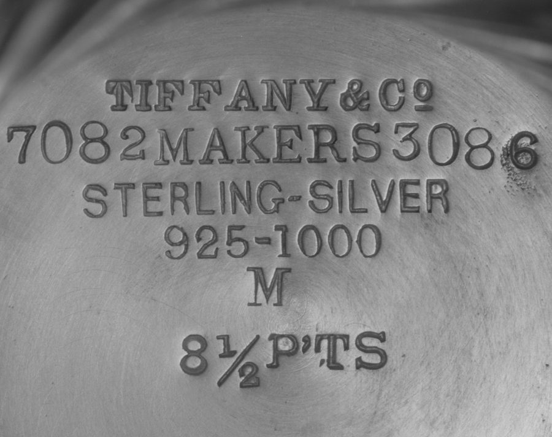
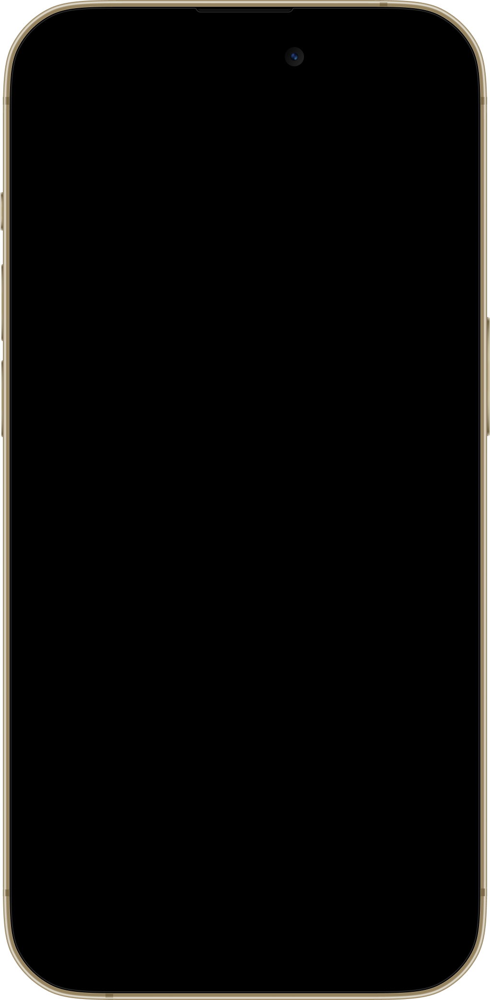
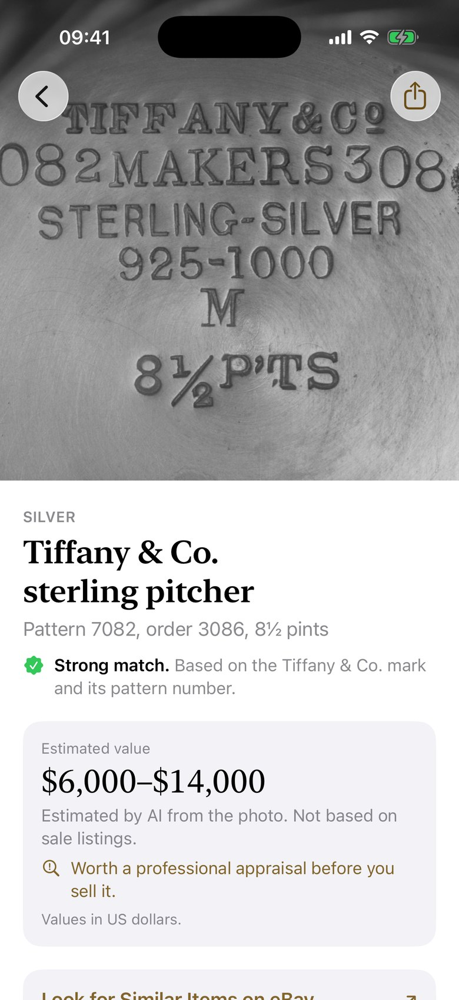
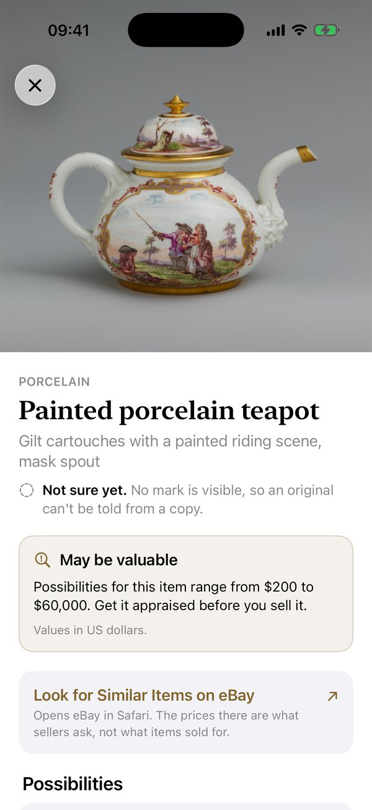
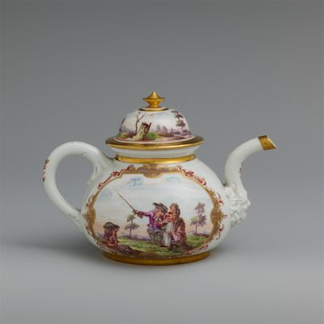
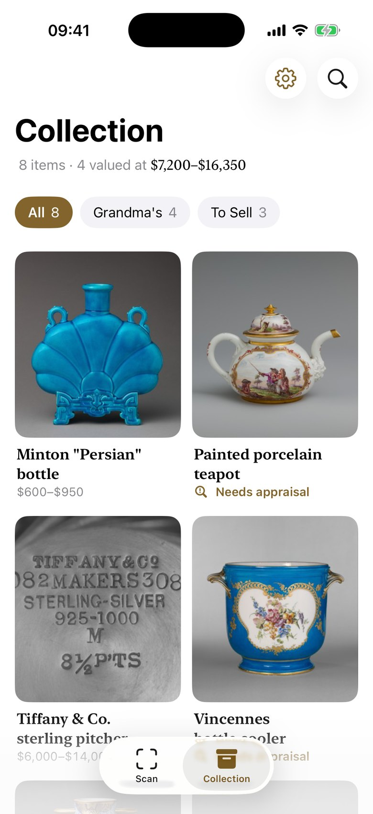

Damgayı Okur
Altındaki damga, bir parçayı kimin ne zaman yaptığının en iyi ipucudur
Backmark eski bir eşyanın ne olduğunu, muhtemelen ne kadar ettiğini ve bundan ne kadar emin olduğunu söyler.
App Store'dan İndirin


Altındaki damga, bir parçayı kimin ne zaman yaptığının en iyi ipucudur
Her cevap ne kadar emin olduğunu ve nedenini kelimelerle söyler, asla yüzdeyle değil
Bir eşya çok değerli olabilir ama cevap kesin değilse Backmark fiyat uydurmaz, ekspertiz yaptırmanızı söyler

Tek bir rakam değil bir aralık, ve neye dayandığı; tutarlar kendi para biriminizde

Bir fotoğraf birden fazla şey olabiliyorsa, her birinin kendi güveniyle en fazla üç cevabı yan yana görürsünüz
Bulduklarınızı Dükkân ya da Satılacaklar gibi klasörlere kaydedin

Hesap yok, üyelik yok. Eşyalarınız, fotoğraflarınız ve notlarınız iPhone'unuzda durur ve internet olmadan açılır
Fotoğraf yalnızca eşyayı tanımak için, siz onay verdikten sonra gönderilir ve asla yapay zekâ eğitiminde kullanılmaz.
Emin değilse bunu söyler; bir eşya değerli olabilirse sizi bir uzmana yönlendirir.
Üç ücretsiz tarama. Her fiyat tam olarak gösterilir; unutulacak deneme süresi ve geri sayım yok.